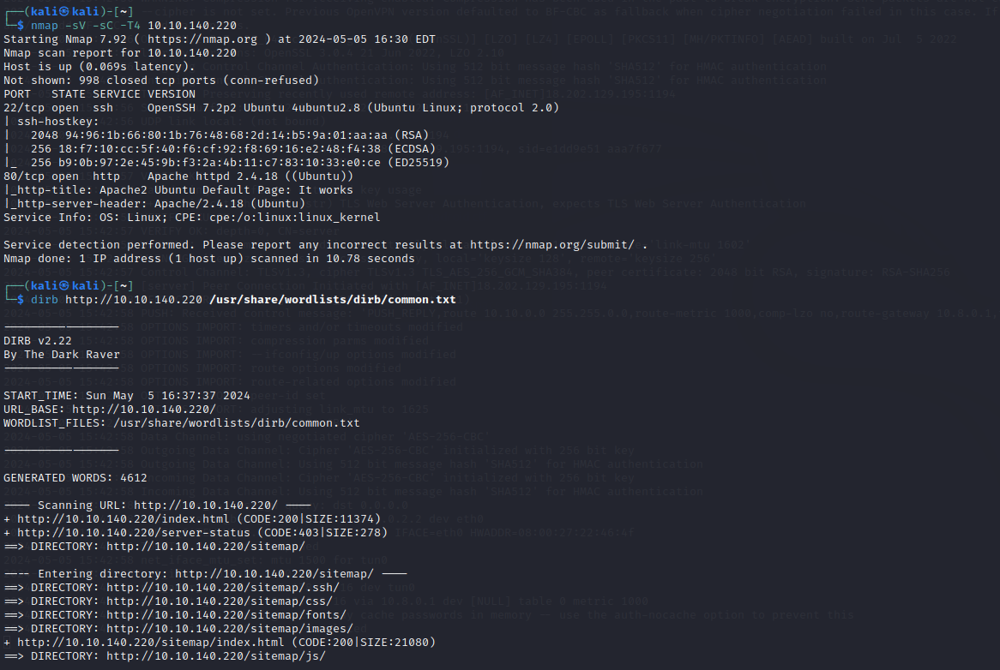
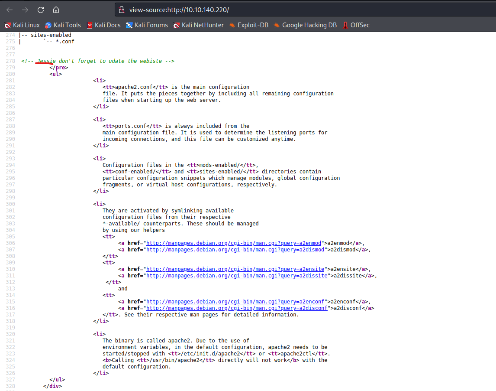
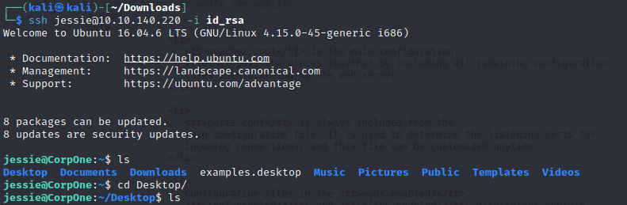
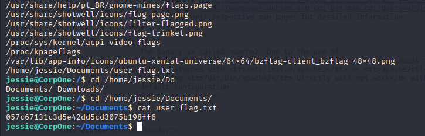

Wgel CTF
2024-05-05
Standardowo na początku rekonesans celu
Po przejściu na ukrytą podstronę .ssh odkryłem klucz RSA

A więc jedyne czego brakowało do zalogowania się do SSH to nazwa użytkownika, po ponowym przeszukiwaniu strony w kodzie źródłowym strony znalazłem komenatrz do usera o nazwie Jessie co postanowiłem użyć do zalogowania się na SSH
 Za pomocą polecenia find odnalazłem pierwszą flagę.
A następnie za pomocą sudo -l dowiedziałem się jak mogę odczytać 2 flagę z uprawnieniami roota
Źródło: https://tryhackme.com/r/room/wgelctf